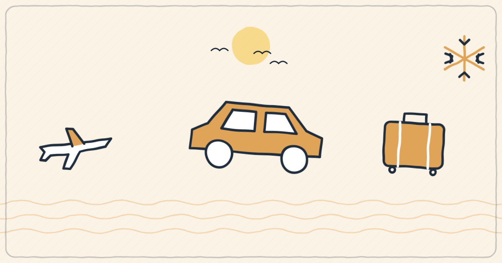

Calgary Airport Parking for a Cruise: What It Really Costs
Park in YYC's Economy lot and a 7-night cruise trip costs about C$112 plus GST at the airport's posted rates, against roughly C$224 in the long-term parkade. Book online ahead, and if two or more of you are travelling, parking usually beats a return taxi. Rates rise on 1 January 2027.

Use the airport's Economy lot, book it online months ahead, and a nine-day cruise trip from YYC comes to about C$112 before GST at the airport's current posted rates. That is roughly half the long-term parkade and a lot less than the short-term one. The only people who should skip parking altogether are solo travellers, who usually do better with a return taxi or the airport bus, and anyone who can get a lift.
How many days does a cruise trip tie up the car?
Count calendar days, not cruise nights. A Calgary cruiser flies out the day before sailing, because a morning flight on sailing day is the one risk an Alaska cruise from Vancouver or a Caribbean sailing from Florida cannot absorb. The car goes into the lot that morning and comes out when you land again.
| Cruise length | Days parked | Why |
|---|---|---|
| 7 nights | 9 | Fly out the day before, fly home the day you disembark |
| 7 nights with a night after | 10 | Common on Florida trips when the only good flight is next morning |
| 10 nights | 12 | Same pattern, longer sailing |
| 14 nights | 16 | Still well inside the 60-day limit on long-term and Economy |
Book the full span from the morning you drive in to the evening you drive out; a 6 am departure and an 11 pm landing nine days later is nine days of parking.
What does YYC parking cost for nine days?
The Calgary Airport Authority publishes its rates with taxes excluded, and it currently shows two tables: one for stays ending before 1 January 2027 and one for stays ending on or after that date. The figures below use the posted daily and first-week rates; GST goes on top.
| Lot | Daily rate now | First week now | 9 days now | 9 days from 1 Jan 2027 |
|---|---|---|---|---|
| Economy (surface lot by the Domestic terminal) | C$16 | C$80 | about C$112 | about C$126 |
| Long-term P1 or P2 (parkades) | C$32 | C$160 | about C$224 | about C$245 |
| Overheight lot (vehicles over 2.0 m) | C$27 | C$135 | about C$189 | about C$196 |
| Short-term P1 or P2 | C$40 | C$200 | about C$280 | about C$396 |
The short-term parkade is for picking people up, not for leaving a car for a cruise, and its first-week price jumps sharply in 2027.
What does the YYC rate table leave out?
- The online discount is real but unquantified. The airport says rates are discounted when you book online and that drive-up hourly rates are not available to pre-bookers. AMA members get a further 20% off all parking products, which on a C$224 parkade stay is about C$45.
- Economy space is tight. The authority notes that Economy lot availability is temporarily reduced. Book it as soon as your flights are confirmed; reservations open up to 12 months ahead.
- Height matters. P1 takes vehicles to 2.0 m, P2 long-term to 2.3 m. A truck with a roof box or a lifted SUV goes to the Overheight lot, which at C$27 a day sits between Economy and the parkades.
Is a taxi or a lift cheaper than parking at YYC?
For one person, usually yes. For two or more, usually no. Work it per trip, not per person.
- Taxi or rideshare. From most of the city a one-way ride to YYC runs roughly C$40–70 at recent prices, so C$80–140 return. A solo traveller on a 9-day trip pays about the same as the Economy lot and avoids a cold car on return; a couple splits the same fare and parking wins.
- A lift from someone. Free, and the most Calgarian option of all. Offer the return favour, or a bottle from the ship's shop on the way home.
- Park-sleep-fly at an airport hotel. Some hotels bundle a night before a dawn flight with parking for the length of your trip. Worth pricing if you live in Okotoks, Cochrane or Airdrie and your flight leaves at 6 am; compare the bundle with a plain hotel night plus Economy parking.
Can you take Calgary Transit to the airport with cruise luggage?
Yes, and for one person it is the cheapest way there. The airport express bus, renamed Route 500 Airport Express in August 2026 from the old Route 300, links downtown and the terminals with limited stops on a regular fare: C$4 for an adult at 2026 prices, valid for 90 minutes. Tickets come from the vending machines at the terminal stops or the 7-Eleven on Arrivals. Route 100 connects the airport to Saddletowne LRT station for the north-east. Two big suitcases each make it a workout, so it suits the light packer more than the family of four.
Does a winter cruise change which lot you pick?
It changes what you come home to. An Alaska sailing in July leaves a car in a warm, dry lot. A January trip to a warm cruise from Canada brings you back at night to a vehicle that may have sat through two weeks of minus twenty.
The parkades are covered, and in February that is worth some of the price difference: no digging out, no frozen door seals, a car that starts. The Economy and Overheight lots have block heater plugs on some stalls only, so if your car needs one, ask when you book. Have the battery tested before a long trip in deep cold; the airport offers free battery boosting for parked vehicles, which is a fallback rather than a plan.
When should you book cruise parking at YYC?
The same day you book the flights, so you never pay a drive-up rate at the gate. Peak days at YYC, by the airport's own description, are Wednesdays, Thursdays, holidays and long weekends, which covers most cruise departures around Christmas, March break and the May long weekend.
- Book the lot online for the full span, entry on departure day and exit on the day you land.
- Add a day on the exit side if the booking allows free changes, because a missed connection home turns into an overstay charged at the drive-up rate.
- Save the confirmation on your phone and photograph the row sign when you park. Two weeks at sea erases a lot of memory.
- If your trip straddles 1 January 2027, remember that a stay ending after that date falls under the higher table.
Does parking beat driving to the ship from Calgary?
For Vancouver sailings, the real question is whether to fly at all. Driving to Canada Place is a long day each way through the mountains, plus port parking at C$25–30 a day, which the Edmonton-to-Vancouver comparison works through in detail; the arithmetic is similar from Calgary. For two people, a flight plus nine days in YYC's Economy lot nearly always comes in under fuel, hotels and port parking. For four in one vehicle, driving can win. The fly-or-drive table and the whole-trip total are in what an Alaska cruise costs from Calgary.
For Florida sailings there is no driving option worth discussing, so parking at YYC or riding to it is the whole decision. It is a small line next to what the Alaska cruise itself costs, but one of the few you fully control.
Want this checked for your own sailing? A licensed cruise consultant can price it up and answer questions for free, with no obligation.
Ask a cruise expert →The Calgary parking plan, in one paragraph
Two or more people: YYC Economy lot, booked online the day the flights are confirmed, about C$112 plus GST for a 7-night cruise at today's posted rates and roughly C$126 under the 2027 table, with AMA knocking off another fifth. One person: a return taxi or the Route 500 bus. Winter: weigh the covered parkade against the saving, and leave the coats in the car either way.
Still wondering?
How many days do I pay for if my cruise is seven nights?
Nine in most cases: the day you fly out, seven nights at sea and the day you fly home, because you should fly in the day before sailing. If you stay a night after the cruise before flying, make it ten.
Is there a shuttle from the YYC Economy lot to the terminal?
Not at the moment. The airport says shuttle service to its surface lots and parkades is not offered, and the Economy lot is a short walk from the Domestic terminal. If you cannot manage the walk with bags, the long-term parkade connects to the terminal directly.
Can I leave my car at Calgary airport for a two-week cruise?
Yes. The long-term parkades and the Economy lot allow stays of up to 60 days; the short-term parkade is capped at 30 days. A 10-night cruise with flights either side is about 12 days, well inside every limit.